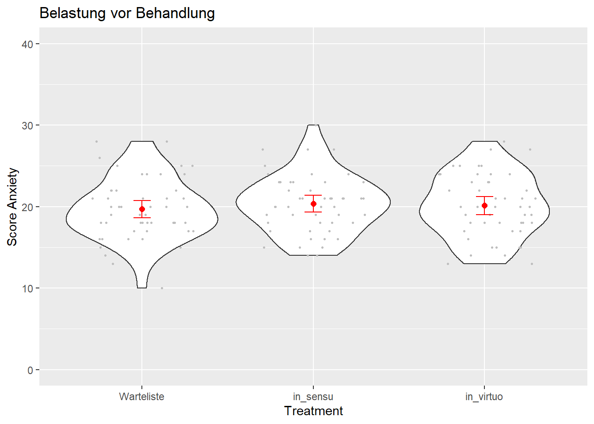
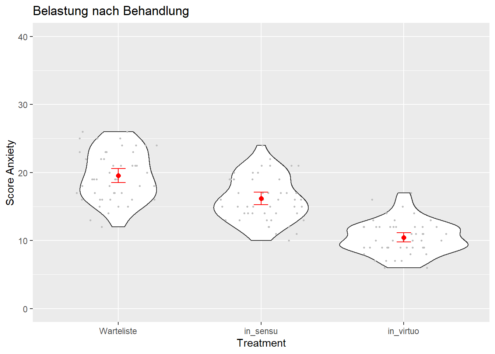
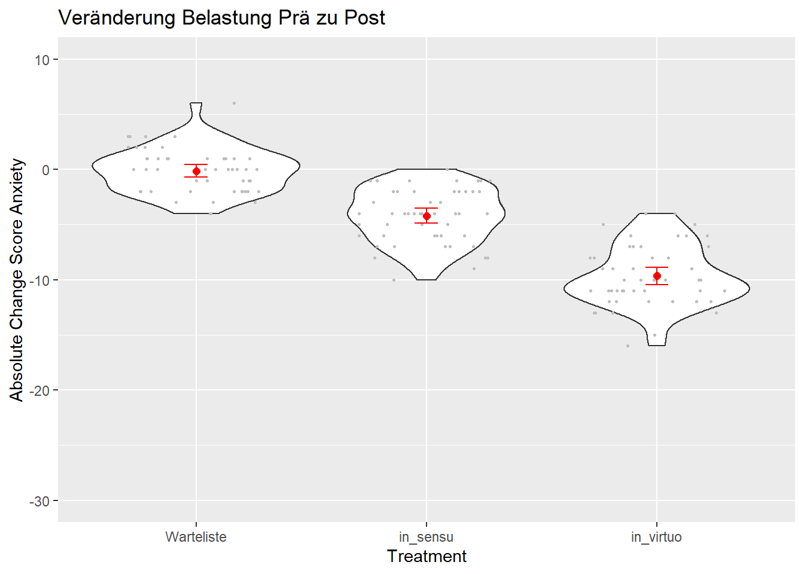
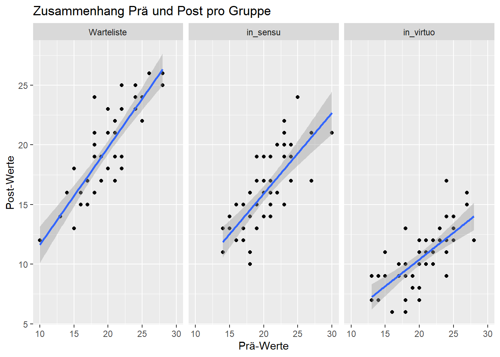
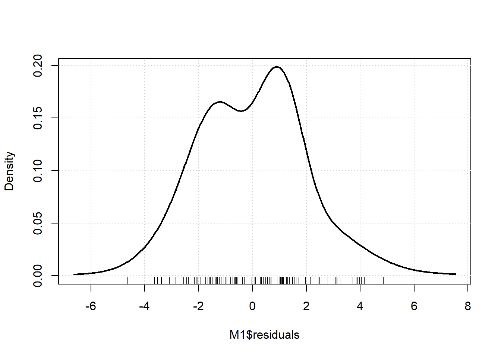
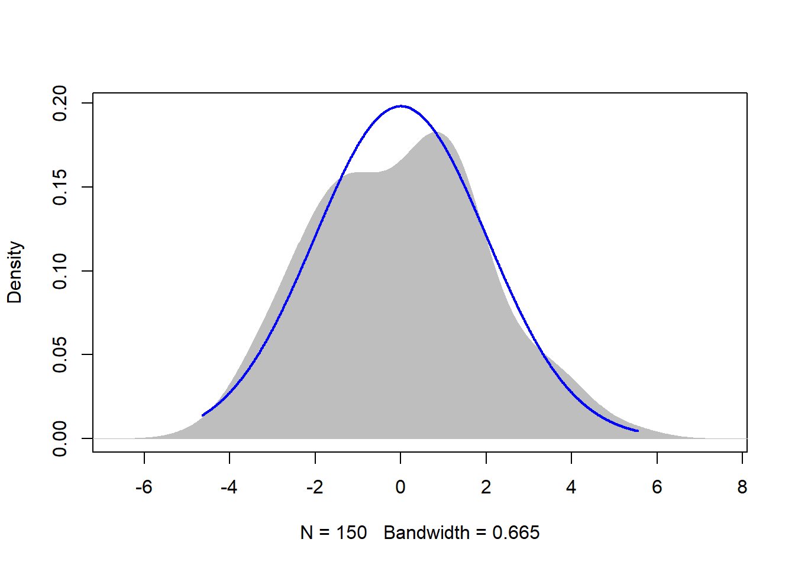
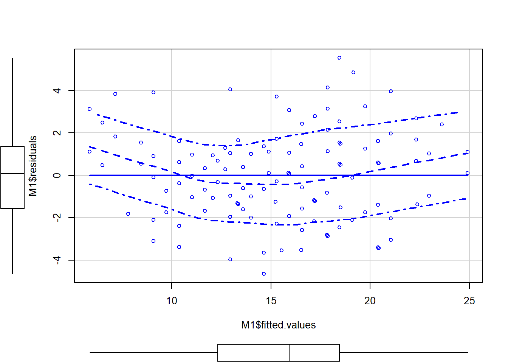
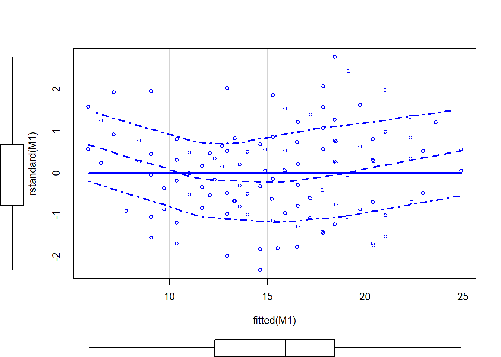
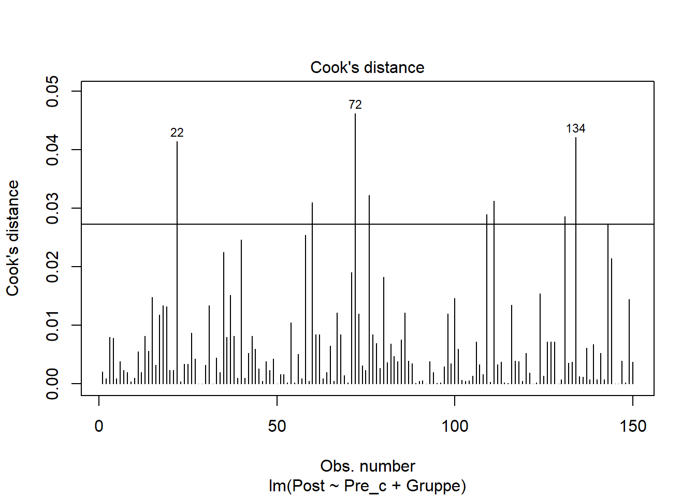
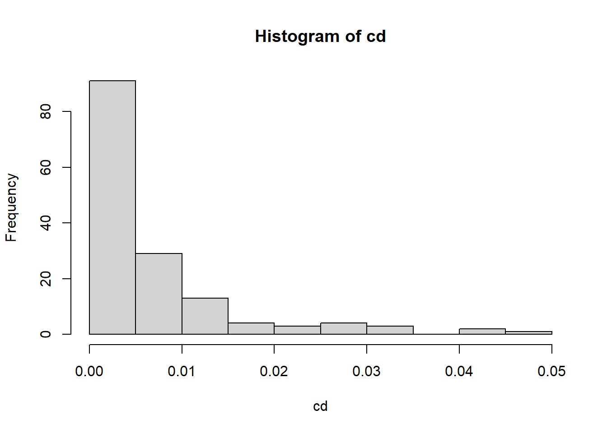

library(ggplot2)
library(psych)
library(Hmisc)
library(car)
library(lmtest)
library(effectsize)
library(rcompanion)Datenanalyse ALM
Allgemeines Lineares Modell 1
Zum Start des Semesters wollen wir gemeinsam Inhalte aus dem Bachelor rekapitulieren. Ein zentrales Konzept ist das Allgemeine Lineare Modell (ALM), das für uns schon viele Analysemöglichkeiten bereithält.
Heute wollen wir uns konkret anschauen, wie man ein solches Modell aufstellt, auf seine Annahmen testet und die Ergebnisse interpretiert.
Vorbereitung
Zunächst laden wir die Pakete, die wir heute brauchen. Nicht vorhandene Pakete müssen mit install.packages("Paketname") installiert werden.
Die Zeile mit warning: false sorgt nur dafür, dass die vielen Warnungen zu nicht ganz gleichen Versionen und Maskierungen von Funktionen (was das ist, interessiert uns nicht) nicht ausgegeben werden.
Achtet nun beim Einlesen der Daten darauf, dass das Verzeichnis für die Datei stimmt und die Datei auch tatsächlich in dem angegeben Ordner zu finden ist.
#setwd("Sitzungen")
dat_1 <- read.csv(file = "Dat_VR_Anxiety_lm1.csv", header = TRUE, sep = ",", dec = ".", na.strings = "NA")
# Characterstrings als Faktoren definieren
dat_1$Gruppe <- as.factor(dat_1$Gruppe)
dat_1$Gruppe <- factor(dat_1$Gruppe, levels = c("Warteliste", "in_sensu", "in_virtuo"))
# Change berechnen
dat_1$Change <- dat_1$Post - dat_1$PreNeben der Erstellung von Faktoren rechnen wir am Ende des Chunks auch die Veränderung im Belastungsscore aus. Man kann sich jetzt nämlich entscheiden, ob man lieber den Postscore oder die Veränderung als Kriterium benutzen möchte.
Visuelle Analyse
Sollte immer gemacht werden. Hier schauen wir uns die Verteilungen der drei relevanten Variablen pre, post und change nach Gruppen getrennt an. Außerdem wollen wir uns den Zusammenhang zwischen Prä- und Postwert ansehen.
## Prä-Messung
ggplot(dat_1, aes(Gruppe, Pre)) +
geom_violin() +
geom_jitter(width = 0.3, height = 0, col = "grey", size = 0.5) +
stat_summary(fun = mean, geom = "point", size = 2, col = "red") +
stat_summary(geom="errorbar", fun.data=mean_cl_normal, width=.1, col ="red")+
ylim(0,40) +
ylab("Score Anxiety") +
xlab("Treatment") +
ggtitle("Belastung vor Behandlung")
## Post-Messung
ggplot(dat_1, aes(Gruppe, Post)) +
geom_violin() +
geom_jitter(width = 0.3, height = 0, col = "grey", size = 0.5) +
stat_summary(fun = mean, geom = "point", size = 2, col = "red") +
stat_summary(geom="errorbar", fun.data=mean_cl_normal, width=.1, col ="red")+
ylim(0,40) +
ylab("Score Anxiety") +
xlab("Treatment") +
ggtitle("Belastung nach Behandlung")
## Veraenderung
ggplot(dat_1, aes(Gruppe, Change)) +
geom_violin() +
geom_jitter(width = 0.3, height = 0, col = "grey", size = 0.5) +
stat_summary(fun = mean, geom = "point", size = 2, col = "red") +
stat_summary(geom="errorbar", fun.data=mean_cl_normal, width=.1, col ="red")+
ylim(-30,+10) +
ylab("Absolute Change Score Anxiety") +
xlab("Treatment") +
ggtitle("Veränderung Belastung Prä zu Post")
## Zusammenhang Pre-Werte und Post-Werte
ggplot(dat_1, aes(Pre, Post)) +
geom_point() +
geom_smooth(method = "lm") +
facet_wrap(~Gruppe)+
ylab("Post-Werte") +
xlab("Prä-Werte")+
ggtitle("Zusammenhang Prä und Post pro Gruppe")`geom_smooth()` using formula 'y ~ x'
Erstes Allgemeines Lineares Modell
Zunächst wollen wir analysieren, wie gut Pre-Treatment-Score und die Behandlungsart den Score Post-Treatment vorhersagen.
Schritt 1: Allgemeines lineares Modell anpassen
# Zentrierung des kontinuierlichen Praediktors Pre-Wert
dat_1$Pre_c <- scale(dat_1$Pre, center = TRUE, scale = FALSE) # dient der besseren Interpretierbarkeit
# Modelldefinition
M1 <- lm(Post ~ Pre_c + Gruppe, data = dat_1)
# Schaetzung der Parameter
summary(M1)
Call:
lm(formula = Post ~ Pre_c + Gruppe, data = dat_1)
Residuals:
Min 1Q Median 3Q Max
-4.6406 -1.5549 0.0877 1.3422 5.5416
Coefficients:
Estimate Std. Error t value Pr(>|t|)
(Intercept) 19.78035 0.28806 68.668 <2e-16 ***
Pre_c 0.64380 0.04496 14.320 <2e-16 ***
Gruppein_sensu -3.81778 0.40783 -9.361 <2e-16 ***
Gruppein_virtuo -9.36327 0.40717 -22.996 <2e-16 ***
---
Signif. codes: 0 '***' 0.001 '**' 0.01 '*' 0.05 '.' 0.1 ' ' 1
Residual standard error: 2.033 on 146 degrees of freedom
Multiple R-squared: 0.8303, Adjusted R-squared: 0.8268
F-statistic: 238.1 on 3 and 146 DF, p-value: < 2.2e-16Erstmal sieht man hier, dass bei dem Faktor Behandlungsart eine sogenannte “Dummy-Kodierung” stattgefunden hat. Da das ALM nur mit kontinuierlichen oder dichotomen Prädiktoren gut umgehen kann, wurde der Faktor dichotomisiert. Die Koeffizienten und Statistiken beziehen sich so auf den Unterschied zwischen der jeweiligen Gruppe im Namen und der Gruppe, die in keinem Namen vorkommt (hier also der Unterschied zwischen in_sensu und Warteliste bzw. in_virtuo und Warteliste).
Für diese Prädiktoren ergeben sich (an Koeffizienten und p-Werten ablesbar) folgende Befunde:
- Jeder zusätzliche Punkt beim Pre-Score erhöht den Post-Score um durchschnittlich 0.64 Punkte (p < 0.05).
- Ein in_sensu-Treatment zu erhalten verringert die Symptomatik im Vergleich zur Warteliste durchschnittlich um 3.82 Punkte (p < 0.05).
- Ein in_virtuo-Treatment verringert die Symptomatik durchschnittlich um 9.36 Punkte.
Schritt 2: Überprüfung des Modells
Um zu testen, ob alle Prädiktoren ins Modell eingeschlossen werden sollten, werden Modellvergleiche, sprich Varianzanalysen, gerechnet. Jeder Prädiktor wird aus dem Gesamtmodell entfernt und es wird getestet, ob das Gesamtmodell besser als das Teilmodell ist.
VA1 <- Anova(M1)
VA1Anova Table (Type II tests)
Response: Post
Sum Sq Df F value Pr(>F)
Pre_c 847.88 1 205.06 < 2.2e-16 ***
Gruppe 2212.73 2 267.57 < 2.2e-16 ***
Residuals 603.68 146
---
Signif. codes: 0 '***' 0.001 '**' 0.01 '*' 0.05 '.' 0.1 ' ' 1M1b <- lm(Post ~ Pre_c, data = dat_1)
M1c <- lm(Post ~ Gruppe, data = dat_1)
anova(M1b, M1)Analysis of Variance Table
Model 1: Post ~ Pre_c
Model 2: Post ~ Pre_c + Gruppe
Res.Df RSS Df Sum of Sq F Pr(>F)
1 148 2816.41
2 146 603.68 2 2212.7 267.57 < 2.2e-16 ***
---
Signif. codes: 0 '***' 0.001 '**' 0.01 '*' 0.05 '.' 0.1 ' ' 1anova(M1c, M1)Analysis of Variance Table
Model 1: Post ~ Gruppe
Model 2: Post ~ Pre_c + Gruppe
Res.Df RSS Df Sum of Sq F Pr(>F)
1 147 1451.56
2 146 603.68 1 847.88 205.06 < 2.2e-16 ***
---
Signif. codes: 0 '***' 0.001 '**' 0.01 '*' 0.05 '.' 0.1 ' ' 1Beide Modellvergleiche sind signifikant, also sollten beide Prädiktoren im Modell bleiben.
Schritt 3: Berechnung der Effektstärken
Als Effektstärken nutzen wir hier die Varianzaufklärung der einzelnen Prädiktoren (eta_squared()). Außerdem berechnen wir Cohen’s d als Maß für die Stärke des Unterschieds zwischen einzelnen Gruppen.
eta_squared(VA1)# Effect Size for ANOVA (Type II)
Parameter | Eta2 (partial) | 95% CI
-----------------------------------------
Pre_c | 0.58 | [0.50, 1.00]
Gruppe | 0.79 | [0.74, 1.00]
- One-sided CIs: upper bound fixed at [1.00].cohen.d(Post ~ Gruppe, data=dat_1[dat_1$Gruppe == "in_sensu" | dat_1$Gruppe == "Warteliste", ])Call: cohen.d(x = Post ~ Gruppe, data = dat_1[dat_1$Gruppe == "in_sensu" |
dat_1$Gruppe == "Warteliste", ])
Cohen d statistic of difference between two means
lower effect upper
Post -1.41 -0.99 -0.58
Multivariate (Mahalanobis) distance between groups
[1] 0.99
r equivalent of difference between two means
Post
-0.44 cohen.d(Post ~ Gruppe, data=dat_1[dat_1$Gruppe == "in_virtuo" | dat_1$Gruppe == "Warteliste", ])Call: cohen.d(x = Post ~ Gruppe, data = dat_1[dat_1$Gruppe == "in_virtuo" |
dat_1$Gruppe == "Warteliste", ])
Cohen d statistic of difference between two means
lower effect upper
Post -3.54 -2.97 -2.39
Multivariate (Mahalanobis) distance between groups
[1] 3
r equivalent of difference between two means
Post
-0.83 Check 1: Unabhängigkeit der Prädiktoren
Das ALM nimmt an, dass die Prädiktoren unabhängig voneinander sind. Praktisch bedeutet dies, dass vorhandene Korrelationen eher gering sind. Hierfür werden am einfachsten Variance-Inflation_Factors VIF genommen. Diese sollten bei 1 liegen, ab 4 sollte überlegt werden, ob Prädiktoren entfernt oder miteinander verrechnet / integriert werden sollten.
vif(M1) GVIF Df GVIF^(1/(2*Df))
Pre_c 1.005814 1 1.002903
Gruppe 1.005814 2 1.001450Check 2: Analyse der Residuen
Das ALM nimmt an, dass die Fehler zufällig und unabhängig von den Prädiktoren sind (Annahme der Varianzhomogenität btw. Homoskedastizität). Wenn dies der Fall ist, dann sollten die Residuen zufällig und normalverteilt um den Wert von Null streuen. Ebenso sollten sich in einer Abbildung der Residuen und vorhergesagten Werte kein Zusammenhang und keine systematische Abweichung von Null zeigen.
## Verteilung der Residuen
densityPlot(M1$residuals)
plotNormalDensity(M1$residuals)
## Verteilung der Residuen in Abhängigkeit von vorhergesagten Werten
scatterplot(M1$residuals ~ M1$fitted.values)
scatterplot(rstandard(M1)~fitted(M1))
## Statistischer Test auf Homoskedastizität: Breusch-Pagan Test
bptest(M1)
studentized Breusch-Pagan test
data: M1
BP = 1.2579, df = 3, p-value = 0.7392Check 3: Test auf Autokorrelation der Residuen
Das ALM geht davon aus, dass Messwerte unabhängig voneinander sind. Wenn diese abhängig voneinander sein sollten, dann nimmt das ALM an, dass diese Abhängigkeit durch die Prädiktoren im Modell erklärt wird. Um zu untersuchen, ob dies der Fall ist, wird analysiert ob die Residuen miteinander korreliert sind. Dies sollte nicht der Fall sein. Wenn diese korreliert sind, dann müssen wir das Modell so erweitern, dass diese Abhängigkeit durch das erweiterte Modell erklärt wird. (Siehe Multi-level)
durbinWatsonTest(M1) # Test für eine Autokorrelation 1.Ordnung lag Autocorrelation D-W Statistic p-value
1 0.04393641 1.906612 0.486
Alternative hypothesis: rho != 0Check 4: Einflussreiche Ausreißer
Cook’s distance ist ein gutes Maß zur Ermittlung zu einflussreicher Ausreißer. Die Werte der einzelnen Fälle sollte nicht größer sein als 4/(N-k-1). Hier im Beispiel N=146 => Werte > 0,0273
cd <- cooks.distance(M1)
#View(cd)
plot(M1,4)
abline(h = 0.0273)
hist(cd)
Zweites Modell
Als Übung dürft ihr nun versuchen, die Veränderung des Ängstlichkeit-Scores mit Behandlungsart und Pre-Treatment-Score vorherzusagen. Dabei sollten wie beim letzten Modell auch die wichtigen Annahmen getestet und die Ergebnisse interpretiert werden.
Schritt 1: Allgemeines lineares Modell anpassen
Schritt 2: Überprüfung des Modells
Um zu testen, ob alle Prädiktoren ins Modell eingeschlossen werden sollten, werden Modellvergleiche, sprich Varianzanalysen, gerechnet. Jeder Prädiktor wird aus dem Gesamtmodell entfernt und es wird getestet, ob das Gesamtmodell besser als das Teilmodell ist.
Schritt 3: Berechnung der Effektstärken
Als Effektstärken nutzen wir hier die Varianzaufklärung der einzelnen Prädiktoren (eta_squared()). Cohen’s d braucht ihr hier nicht nochmal berechnen.
Check 1: Unabhängigkeit der Prädiktoren
Das ALM nimmt an, dass die Prädiktoren unabhängig voneinander sind. Praktisch bedeutet dies, dass vorhandene Korrelationen eher gering sind. Hierfür werden am einfachsten Variance-Inflation_Factors VIF genommen. Diese sollten bei 1 liegen, ab 4 sollte überlegt werden, ob Prädiktoren entfernt oder miteinander verrechnet / integriert werden sollten.
Check 2: Analyse der Residuen
Das ALM nimmt an, dass die Fehler zufällig und unabhängig von den Prädiktoren sind (Annahme der Varianzhomogenität btw. Homoskedastizität). Wenn dies der Fall ist, dann sollten die Residuen zufällig und normalverteilt um den Wert von Null streuen. Ebenso sollten sich in einer Abbildung der Residuen und vorhergesagten Werte kein Zusammenhang und keine systematische Abweichung von Null zeigen.
Check 3: Test auf Autokorrelation der Residuen
Das ALM geht davon aus, dass Messwerte unabhängig voneinander sind. Wenn diese abhängig voneinander sein sollten, dann nimmt das ALM an, dass diese Abhängigkeit durch die Prädiktoren im Modell erklärt wird. Um zu untersuchen, ob dies der Fall ist, wird analysiert ob die Residuen miteinander korreliert sind. Dies sollte nicht der Fall sein. Wenn diese korreliert sind, dann müssen wir das Modell so erweitern, dass diese Abhängigkeit durch das erweiterte Modell erklärt wird. (Siehe Multi-level)